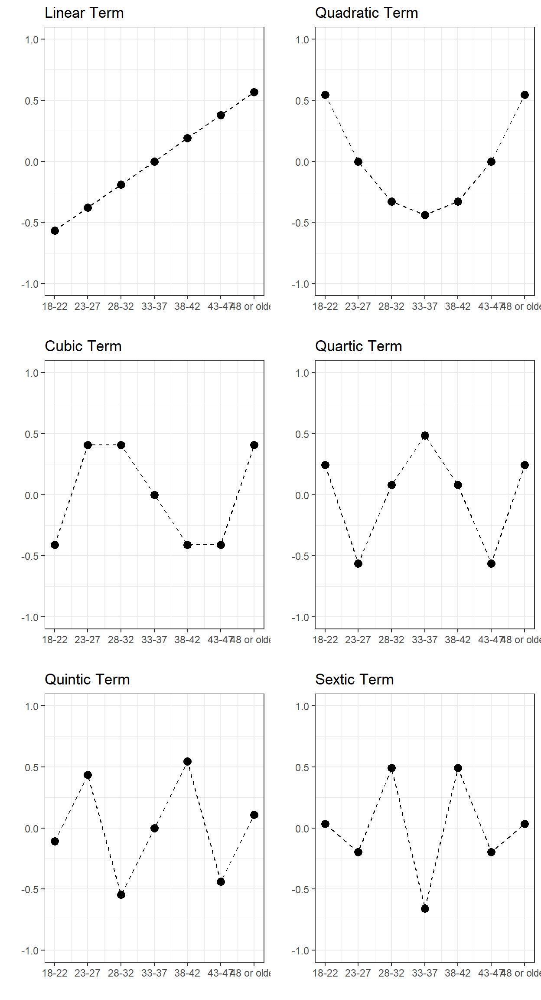
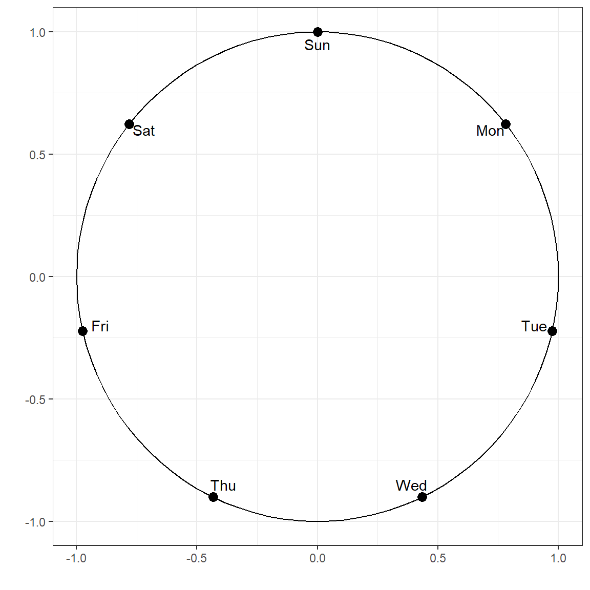
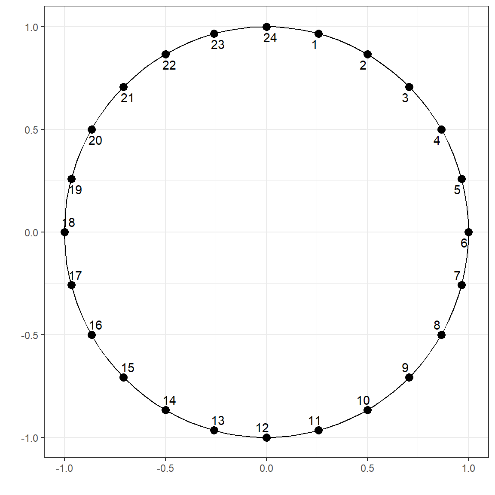
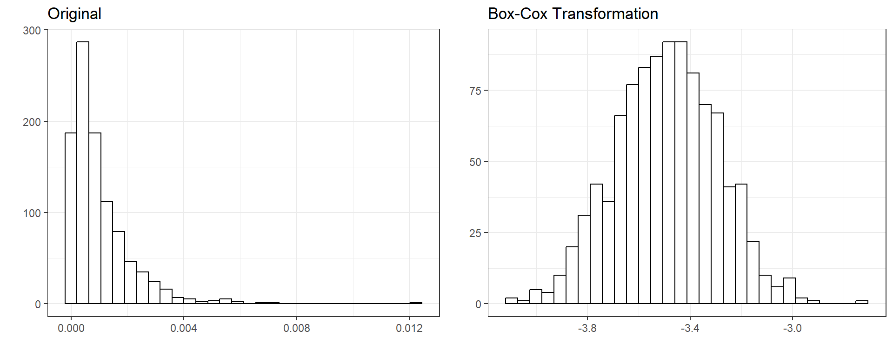
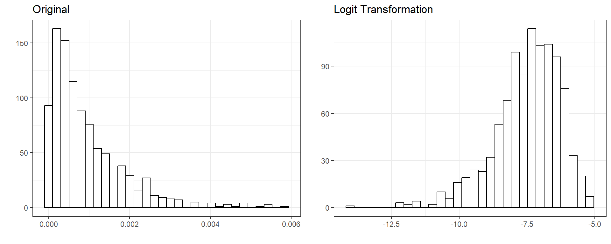

[Updated: Sun, Nov 27, 2022 - 14:04:09 ]
1. Scales of Measurement and Types of Variables
It is important to understand the nature of variables and how they were measured and represented in a dataset. In social sciences, in particular psychology, there is a methodological consensus about the framework provided by Stevens (1946), also see Michell (2002) for an in-depth discussion. According to Stevens’ definition, there are four levels of measurement: nominal, ordinal, interval, and ratio. Whether a variable has a nominal, ordinal, interval, or ratio scale depends on the character of the empirical operations performed while constructing the variable.
Nominal scale: Variables with a nominal scale cannot be meaningfully added, subtracted, divided, or multiplied. Also, there is no hierarchical order among the assigned values. Most variables containing labels for individual observations can be considered nominal, e.g., hair color, city, state, and ethnicity.
Ordinal scale: Variables with an ordinal scale also represent labels; however, there is a meaningful hierarchy among the assigned values. For instance, if a variable is coded as Low, Medium, and High, they are simply labels. Still, we know that High represents something more than Medium and Medium represents something higher than Low (High > Medium > Low). On the other hand, the distance between the assigned values does not necessarily represent the same amount of difference. Other examples of variables that can be considered as ordinal are letter grades (A-F), scores from Likert type items (Strongly agree, agree, disagree, strongly disagree), education status(high school, college, master’s, Ph.D.), cancer stage (stage1, stage2, stage3), order of finish in a competition (1st, 2nd, 3rd).
Interval scale: Variables with an ordinal scale represent quantities with equal measurement units but don’t have an absolute zero point. For instance, a typical example of an interval scale is temperature measured on the Fahrenheit scale. The difference between 20F and 30F is the same as between 60F and 70F. However, 0F does not indicate the absence of heat.
Ratio scale: Variables with a ratio scale represent quantities with equal measurement units and have an absolute zero. Due to the existence of an absolute zero point that represents ‘nothing,’ the ratio of measurements is also meaningful. Typical examples are height, mass, distance, and length.
Below table provides a summary of properties for each scale.
| Indicating Difference | Indicating Direction of Difference | Indicating Amount of Difference | Has absolute zero | |
|---|---|---|---|---|
| Nominal | X | |||
| Ordinal | X | X | ||
| Interval | X | X | X | |
| Ratio | X | X | X | X |
In this class, we classify the variables in two types: Categorical and Continuous. The variables with a nominal or ordinal scale are considered as Categorical and the variables with an interval or ratio scale are considered as Continuous.
2. Processing Categorical Variables
When categorical predictors are in a dataset, it is essential to transform them into numerical codes. When encoding categorical predictors, we try to preserve as much information as possible from their labels. Therefore, different strategies may be used for categorical variables with different ordinal scales.
2.1 One-hot encoding (Dummy Variables)
A dummy variable is a synthetic variable with two outcomes (0 and 1) representing a group membership. When there is a nominal variable with N levels, it is typical to create N dummy variables to represent the information in the nominal variable. Each dummy variable represents membership to one of the levels in the nominal variable. These dummy variables can be used as features in predictive models.
In its simplest case, consider the variable Race in the
Recidivism dataset with two levels: Black and White. We can create two
dummy variables: the first dummy variable represents whether or not an
individual is Black, and the second dummy variable represents whether or
not the individual is White.
| Dummy Variable 1 | Dummy Variable 2 | |
|---|---|---|
| Black | 1 | 0 |
| White | 0 | 1 |
Let’s consider another example from the Recidivism dataset. Variable
Prison_Offense has five categories: Violent/Sex,
Violent/Non-Sex, Property, Drug, and Other. We can create five dummy
variables using the following coding scheme.
| Dummy Variable 1 | Dummy Variable 2 | Dummy Variable 3 | Dummy Variable 4 | Dummy Variable 5 | |
|---|---|---|---|---|---|
| Violent/Sex | 1 | 0 | 0 | 0 | 0 |
| Violent/Non-Sex | 0 | 1 | 0 | 0 | 0 |
| Property | 0 | 0 | 1 | 0 | 0 |
| Drug | 0 | 0 | 0 | 1 | 0 |
| Other | 0 | 0 | 0 | 0 | 1 |
Note that Prison_Offence is missing for several
observations. You can fill in the missing values before creating dummy
variables using one of the methods we will discuss later. Alternatively,
we can define Missing as the sixth category to preserve that
information.
| Dummy Variable 1 | Dummy Variable 2 | Dummy Variable 3 | Dummy Variable 4 | Dummy Variable 5 | Dummy Variable 6 | |
|---|---|---|---|---|---|---|
| Violent/Sex | 1 | 0 | 0 | 0 | 0 | 0 |
| Violent/Non-Sex | 0 | 1 | 0 | 0 | 0 | 0 |
| Property | 0 | 0 | 1 | 0 | 0 | 0 |
| Drug | 0 | 0 | 0 | 1 | 0 | 0 |
| Other | 0 | 0 | 0 | 0 | 1 | 0 |
| Missing | 0 | 0 | 0 | 0 | 0 | 1 |
In some cases, when you have a geographical location with a
reasonable number of categories (e.g., counties or cities in a state,
schools in a district), you can also create dummy variables to represent
this information. In our case, the Recidivism dataset has a variable
called Residence_PUMA indicating Public
Use Microdata Area (PUMA) for the residence address at the time
individual was released. This variable has 25 unique codes (1-25);
however, these numbers are just labels. So, one can create 25 different
dummy variables to represent 25 different PUMAs.
When you fit a typical regression model without regularization using ordinary least-squares (OLS), a typical practice is to drop a dummy variable for one of the levels. So, for instance, if there are N levels for a nominal variable, you only have to create (N-1) dummy variables, as the Nth one has redundant information. The information regarding the excluded category is represented in the intercept term. It creates a problem when you put all N dummy variables into the model because the OLS procedure tries to invert a singular matrix, and you will likely get an error message.
On the other hand, this is not an issue when you fit a regularized regression model, which will be the case in this class. Therefore, you do not need to drop one of the dummy variables and can include all of them in the analysis. In fact, it may be beneficial to keep the dummy variables for all categories in the model when regularization is used in the regression. Otherwise, the model may produce different predictions depending on which category is excluded.
2.2. Label encoding
When the variable of interest is ordinal, and there is a hierarchy among the levels, we can still use one-hot encoding to create a set of dummy variables to represent the information in the ordinal variable. However, dummy variables will not provide information regarding the categories’ hierarchy.
For instance, consider the variable Age_At_Release in
the Recidivism dataset. It is coded as 7 different age intervals in the
dataset: 18-22, 23-27, 28-32, 33-37, 38-42, 43-47, 48 or older. One can
create seven dummy variables to represent each category in this
variable. Alternatively, one can assign a numeric variable to each
category that may represent the information in these categories. For
instance, one can assign numbers from 1 to 7, respectively. Or, one can
choose the midpoint of each interval to represent each category (e.g.,
20,25,31,35,40,45,60).
Another example would be the variable Education Level in
the Recidivism dataset. It has three levels: At least some college, High
School Diploma, and Less than a High School diploma. One can create
three dummy variables to represent each level. Alternatively, one can
assign 1, 2, and 3, respectively. Or, one can assign a number for the
approximate years of schooling for each level, such as 9, 12, and
15.
2.3. Polynomial Contrasts
Another way of encoding an ordinal variable is to use polynomial
contrasts. The polynomial contrasts may be helpful if one wants to
explore whether or not there is a linear, quadratic, cubic, etc., the
relationship between the predictor variable and outcome variable. You
can use the stat::poly() function in R to obtain the set of
polynomial contrasts. If there are N levels in an ordinal
variable, you can get polynomials up to degree N-1.
For instance, suppose you have an ordinal variable with three levels:
Low, Medium, and High. Then, stat::poly(x=1:3,degree=2)
will return the polynomial contrasts for the linear and quadratic terms.
Notice that the input for the poly function is a vector of
numeric values corresponding to the ordinal variable levels and the
degree of the requested polynomial terms. For this example, it creates
two sets of vectors to represent this ordinal variable. Note that the
sum of the squares within each column equals 1, and the dot product of
the contrast vectors equals 0. In other words, the polynomial terms
represent a set of orthonormal vectors.
| Linear | Quadratic | |
|---|---|---|
| Low | -0.707 | 0.408 |
| Medium | 0 | -0.816 |
| High | 0.707 | 0.408 |
1 2
[1,] -0.707 0.408
[2,] 0.000 -0.816
[3,] 0.707 0.408
attr(,"coefs")
attr(,"coefs")$alpha
[1] 2 2
attr(,"coefs")$norm2
[1] 1.0000000 3.0000000 2.0000000 0.6666667
attr(,"degree")
[1] 1 2
attr(,"class")
[1] "poly" "matrix"sum(ctr[,1]^2)[1] 1sum(ctr[,2]^2)[1] 1sum(ctr[,1]*ctr[,2])[1] 0.00000000000000006410345
If we consider the variable Age_At_Release with 7
different levels, then we can have polynomial terms up to the 6th
degree.
1 2 3 4 5 6
[1,] -0.567 0.546 -0.408 0.242 -0.109 0.033
[2,] -0.378 0.000 0.408 -0.564 0.436 -0.197
[3,] -0.189 -0.327 0.408 0.081 -0.546 0.493
[4,] 0.000 -0.436 0.000 0.483 0.000 -0.658
[5,] 0.189 -0.327 -0.408 0.081 0.546 0.493
[6,] 0.378 0.000 -0.408 -0.564 -0.436 -0.197
[7,] 0.567 0.546 0.408 0.242 0.109 0.033
attr(,"coefs")
attr(,"coefs")$alpha
[1] 4 4 4 4 4 4
attr(,"coefs")$norm2
[1] 1.0000 7.0000 28.0000 84.0000 216.0000 452.5714 685.7143
[8] 561.0390
attr(,"degree")
[1] 1 2 3 4 5 6
attr(,"class")
[1] "poly" "matrix"
There are other ways of encoding nominal and ordinal variables (e.g., Helmert contrasts), or one can come up with their own set of contrast values. When the goal of analysis is inference and you run analysis to respond to a specific research question, your research question typically dictates the type of encoding to use. You choose a coding scheme that provides you the most interpretable coefficients to respond to your research question.
On the other hand, when the goal of analysis is prediction, how you encode your categorical variable does not make much difference. In fact, they provide very similar predictions. Below, I provide an example using Age_at_Release variable to predict the outcome using different coding schemes and report the average squared error of predictions from a logistic regression model.
| Encoding | Average Squared Error |
|---|---|
| Intercept-Only (NULL) | 0.1885789 |
| Dummy Variables | 0.1861276 |
| Label Encoding | 0.1861888 |
| Polynomial Contrasts | 0.1861276 |
| Helmert Contrasts | 0.1861276 |
Notice that one-hot encoding, polynomial contrasts, and helmert contrasts have identical performance. In fact, they yield the exact same predicted value for observations. Moreover, a simple label encoding with a single constructed variable does (almost) as well as other encoding types with multiple constructed variables.
3. Processing Cyclic Variables
There are sometimes variables that are cyclic by nature (e.g., months, days, hour), and a type of encoding that represents their cyclic nature may be the most meaningful way to represent them instead of numerical or categorical encoding. One way to achieve this is to create two new variables using a sine and cosine transformation as the following:
\[x_{1} = sin(\frac{2 \pi x}{max(x)}),\] \[x_{2} = cos(\frac{2 \pi x}{max(x)}).\]
For instance, suppose one of the variables in a dataset is the day of the week. We can represent its cyclic nature using the two variables as defined the following. Once the corresponding coordinates are calculated for each day of the week, the single variable that represents days in the data can be replaced with these two variables representing their coordinates in a unit circle.
d <- data.frame(days = c('Mon','Tue','Wed','Thu','Fri','Sat','Sun'),
x = 1:7)
d$x1 <- sin((2*pi*d$x)/7)
d$x2 <- cos((2*pi*d$x)/7)
d days x x1 x2
1 Mon 1 0.7818314824680298036341 0.6234898
2 Tue 2 0.9749279121818236193420 -0.2225209
3 Wed 3 0.4338837391175582314240 -0.9009689
4 Thu 4 -0.4338837391175580093794 -0.9009689
5 Fri 5 -0.9749279121818236193420 -0.2225209
6 Sat 6 -0.7818314824680299146564 0.6234898
7 Sun 7 -0.0000000000000002449213 1.0000000
We can apply the same concept to any cyclic variable. Here is another example for the time of day.
d <- data.frame(hour = 1:24)
d$x1 <- sin((2*pi*d$hour)/24)
d$x2 <- cos((2*pi*d$hour)/24)
d hour x1 x2
1 1 0.2588190451025207394764 0.96592582628906831221371
2 2 0.4999999999999999444888 0.86602540378443870761060
3 3 0.7071067811865474617150 0.70710678118654757273731
4 4 0.8660254037844385965883 0.50000000000000011102230
5 5 0.9659258262890683122137 0.25881904510252073947640
6 6 1.0000000000000000000000 0.00000000000000006123032
7 7 0.9659258262890683122137 -0.25881904510252062845410
8 8 0.8660254037844387076106 -0.49999999999999977795540
9 9 0.7071067811865475727373 -0.70710678118654746171501
10 10 0.4999999999999999444888 -0.86602540378443870761060
11 11 0.2588190451025210170322 -0.96592582628906820119141
12 12 0.0000000000000001224606 -1.00000000000000000000000
13 13 -0.2588190451025207949876 -0.96592582628906831221371
14 14 -0.4999999999999997224442 -0.86602540378443881863291
15 15 -0.7071067811865471286481 -0.70710678118654790580422
16 16 -0.8660254037844383745437 -0.50000000000000044408921
17 17 -0.9659258262890683122137 -0.25881904510252062845410
18 18 -1.0000000000000000000000 -0.00000000000000018369095
19 19 -0.9659258262890684232360 0.25881904510252029538719
20 20 -0.8660254037844385965883 0.50000000000000011102230
21 21 -0.7071067811865476837596 0.70710678118654735069271
22 22 -0.5000000000000004440892 0.86602540378443837454370
23 23 -0.2588190451025215721437 0.96592582628906809016911
24 24 -0.0000000000000002449213 1.00000000000000000000000
4. Processing Continuous Variables
4.1. Centering and Scaling (Standardization)
Centering a variable is done by subtracting the variable’s mean from every variable’s value, ensuring that the mean of the centered variable equals zero. Scaling a variable is dividing the value of each observation by the variable’s standard deviation. When centering and scaling are both applied, it is called standardization.
When we standardize a variable, we ensure that its mean is equal to zero and variance is equal to 1. Standardizing outcome and predictor variables may be critical and necessary for specific models (e.g., K-nearest neighbor, support vector machines, penalized regression), but it is not always necessary for other models (e.g., decision tree models).
Standardizing a variable only changes the first and second moments of a distribution (mean and variance); however, it doesn’t change the third and fourth moments of a distribution (skewness and kurtosis). Notice that the skewness and kurtosis for both the original and the standardized variable are 3.64 and 18.24, respectively. We only change the mean to zero and variance to one by standardizing a variable.
4.2. Box-Cox transformation
Variables with extreme skewness and kurtosis may deteriorate the model performance for certain types of models. Therefore, it may sometimes be useful to transform a variable with extreme skewness and kurtosis such that its distribution approximates to a normal distribution. Box-Cox transformation is a method to find an optimal parameter of \(\lambda\) to apply the following transformation:
\[y^{(\lambda)}=\left\{\begin{matrix} \frac{y^{\lambda}-1}{\lambda} & , \lambda \neq 0 \\ & \\ ln(y) & , \lambda = 0 \end{matrix}\right.\]
Below is an example of transforming the a right-skewed variable using
the boxcox function from the bestNormalize
package. Notice that the skewness and the kurtosis for the transformed
variable are 0 and -0.02, respectively.
require(bestNormalize)
require(psych)
old <- rbeta(1000,1,1000)
fit <- boxcox(old,standardize=FALSE)
fitNon-Standardized Box Cox Transformation with 1000 nonmissing obs.:
Estimated statistics:
- lambda = 0.2492177
- mean (before standardization) = -3.36775
- sd (before standardization) = 0.186852 vars n mean sd median trimmed mad min max range skew kurtosis
X1 1 1000 0 0 0 0 0 0 0.01 0.01 2.31 8.54
se
X1 0describe(new) vars n mean sd median trimmed mad min max range skew
X1 1 1000 -3.37 0.19 -3.37 -3.37 0.19 -3.89 -2.75 1.13 -0.03
kurtosis se
X1 -0.22 0.01
Box-Cox transformation can be used only for variables with positive
values. Therefore, it is a good idea to first implement the Box-Cox
transformation, and then standardize a variable if both procedures will
be applied to a variable. If there is a variable with negative values or
a mix of both positive and negative values, the Yeo-Johnson
transformation is available as an extension of the Box-Cox
transformation. See this link for more
information. The function yeojohnson is available in the
bestNormalizer package to implement the Yeo-Johnson
transformation (See, ?bestNormalizer::yeojohnson).
4.3. Logit Transformation
When a variable is a proportion bounded between 0 and 1, the logit transformation can be applied such that
\[\pi^{*} = ln(\frac{\pi}{1-\pi}),\]
where \(\pi\) represents a proportion. This may be particularly useful when your outcome variable is a proportion bounded between 0 and 1. When a linear model is used to model an outcome bounded between 0 and 1, the model predictions may exceed the reasonable range of values (predictions equal to less than zero or greater than one). Logit transformation scales variables such that the range of values becomes \(-\infty\) and \(\infty\) on the logit scale. One can build a model to predict logit (\(\pi^*\)) instead of proportion (\(\pi\)) and then ensure that the model predictions are bounded between 0 and 1 on the original proportion scale after a simple reverse operation for predicted values.
\[\pi = \frac{e^{\pi^*}}{1+e^{\pi^*}} \]
One caveat of using logit transformation is that it is not defined for 0 and 1. So, when you have values in the dataset exactly equal to 0 or 1, logit transformation will return either \(-\infty\) and \(\infty\). In these situations, we may add or substract a very tiny constant (e.g., .0001) to force the transformation to return a numerical value.
\[\pi^{*} = ln(\frac{\pi}{1-\pi}) = ln(\frac{0}{1-0}) = -\infty\] \[\pi^{*} = ln(\frac{\pi}{1-\pi}) = ln(\frac{1}{1-1}) = \infty\]
Below is an example of logit transformation for a randomly generated variable.

4.4. Basis Expansions
Basis expansions are useful to address nonlinearity between a continuous predictor variable and outcome variable. Using the basis expansions, one can create a set of feature variables using a nonlinear function of a variable x, \(\phi(x)\). One simply replaces the original variable x with the new variables obtained from \(\phi(x)\). For continuous predictors, the most commonly used expansions are polynomial basis expansions. The \(n^{th}\) degree polynomial basis expansion can be represented by
\[\phi(x) = \beta_1x + \beta_2x^2 + \beta_3x^3 + ... + \beta_nx^n .\]
Suppose we have 100 observation from a random normal variable
x. The third degree polynomial basis expansion (cubic basis
expansion) can be found using the poly function as the
following.
[1] -0.76031762 -0.38970450 1.68962523 -0.09423560 0.09530146
[6] 0.81727228 1 2 3
[1,] -0.070492258 -0.06612854 0.056003658
[2,] -0.030023304 -0.07454585 -0.003988336
[3,] 0.197028288 0.28324096 0.348896805
[4,] 0.002240307 -0.06560960 -0.044790680
[5,] 0.022936731 -0.05256865 -0.063289287
[6,] 0.101772051 0.04942613 -0.034439696So, one can use these three new variables representing a linear, quadratic, and cubic trend in our prediction model instead of the original variable x. See below the relationship between the original variable x and the new polynomial features to replace it.

For continuous predictors, there is no limit for the degree of polynomial. The higher the degree of polynomial, the more flexible the model becomes, and there is a higher chance of overfitting. Typically, polynomial terms up to the 3rd or 4th degree are more than enough.
5. Handling Missing Data
Missing data deserves a course of its own. For a comprehensive review of how to handle and impute missing data. For certain types of models such as gradient boosting, missing data is not a problem, and one can leave them as is without any processing. On the other hand, some models such as regularized regression models require complete data and one have to deal with missing data before modeling data. It is always a good idea to run some simple descriptive analysis to understand the scope of missing values in your dataset.
The ff_glimpse() function from the finalfit
package is a useful to get a quick look at the missing values in your
dataset. See an example for the recidivism dataset
require(finalfit)
ff_glimpse(recidivism)$Continuous[,c('n','missing_percent')] n
ID 18111
Residence_PUMA 18111
Gang_Affiliated 15609
Supervision_Risk_Score_First 17819
Dependents 18111
Prior_Arrest_Episodes_Felony 18111
Prior_Arrest_Episodes_Misd 18111
Prior_Arrest_Episodes_Violent 18111
Prior_Arrest_Episodes_Property 18111
Prior_Arrest_Episodes_Drug 18111
Prior_Arrest_Episodes_PPViolationCharges 18111
Prior_Arrest_Episodes_DVCharges 18111
Prior_Arrest_Episodes_GunCharges 18111
Prior_Conviction_Episodes_Felony 18111
Prior_Conviction_Episodes_Misd 18111
Prior_Conviction_Episodes_Viol 18111
Prior_Conviction_Episodes_Prop 18111
Prior_Conviction_Episodes_Drug 18111
Prior_Conviction_Episodes_PPViolationCharges 18111
Prior_Conviction_Episodes_DomesticViolenceCharges 18111
Prior_Conviction_Episodes_GunCharges 18111
Prior_Revocations_Parole 18111
Prior_Revocations_Probation 18111
Condition_MH_SA 18111
Condition_Cog_Ed 18111
Condition_Other 18111
Violations_ElectronicMonitoring 18111
Violations_Instruction 18111
Violations_FailToReport 18111
Violations_MoveWithoutPermission 18111
Delinquency_Reports 18111
Program_Attendances 18111
Program_UnexcusedAbsences 18111
Residence_Changes 18111
Avg_Days_per_DrugTest 14343
DrugTests_THC_Positive 15254
DrugTests_Cocaine_Positive 15254
DrugTests_Meth_Positive 15254
DrugTests_Other_Positive 15254
Percent_Days_Employed 17649
Jobs_Per_Year 17303
Employment_Exempt 18111
Recidivism_Within_3years 18111
Recidivism_Arrest_Year1 18111
Recidivism_Arrest_Year2 18111
Recidivism_Arrest_Year3 18111
Training_Sample 18111
missing_percent
ID 0.0
Residence_PUMA 0.0
Gang_Affiliated 13.8
Supervision_Risk_Score_First 1.6
Dependents 0.0
Prior_Arrest_Episodes_Felony 0.0
Prior_Arrest_Episodes_Misd 0.0
Prior_Arrest_Episodes_Violent 0.0
Prior_Arrest_Episodes_Property 0.0
Prior_Arrest_Episodes_Drug 0.0
Prior_Arrest_Episodes_PPViolationCharges 0.0
Prior_Arrest_Episodes_DVCharges 0.0
Prior_Arrest_Episodes_GunCharges 0.0
Prior_Conviction_Episodes_Felony 0.0
Prior_Conviction_Episodes_Misd 0.0
Prior_Conviction_Episodes_Viol 0.0
Prior_Conviction_Episodes_Prop 0.0
Prior_Conviction_Episodes_Drug 0.0
Prior_Conviction_Episodes_PPViolationCharges 0.0
Prior_Conviction_Episodes_DomesticViolenceCharges 0.0
Prior_Conviction_Episodes_GunCharges 0.0
Prior_Revocations_Parole 0.0
Prior_Revocations_Probation 0.0
Condition_MH_SA 0.0
Condition_Cog_Ed 0.0
Condition_Other 0.0
Violations_ElectronicMonitoring 0.0
Violations_Instruction 0.0
Violations_FailToReport 0.0
Violations_MoveWithoutPermission 0.0
Delinquency_Reports 0.0
Program_Attendances 0.0
Program_UnexcusedAbsences 0.0
Residence_Changes 0.0
Avg_Days_per_DrugTest 20.8
DrugTests_THC_Positive 15.8
DrugTests_Cocaine_Positive 15.8
DrugTests_Meth_Positive 15.8
DrugTests_Other_Positive 15.8
Percent_Days_Employed 2.6
Jobs_Per_Year 4.5
Employment_Exempt 0.0
Recidivism_Within_3years 0.0
Recidivism_Arrest_Year1 0.0
Recidivism_Arrest_Year2 0.0
Recidivism_Arrest_Year3 0.0
Training_Sample 0.0ff_glimpse(recidivism)$Categorical[,c('n','missing_percent')] n missing_percent
Gender 18111 0.0
Race 18111 0.0
Age_at_Release 18111 0.0
Supervision_Level_First 16962 6.3
Education_Level 18111 0.0
Prison_Offense 15820 12.6
Prison_Years 18111 0.0We will focus a few ideas about how to handle missing data.
5.1. Creating an indicator variable for missingness
We can create a binary indicator variable for every variable to indicate missingness (0: not missing, 1: missing). It doesn’t solve the missing data problem because we may still have to impute the missing values for modeling; however, an indicator variable about whether or not a variable is missing may sometimes provide some information in predicting the outcome. Suppose the missingness is not random, and there is a systematic relationship between outcome and whether or not values are missing for a variable. In that case, this may provide vital information to bring into the model. This indicator variable would be meaningless for variables that don’t have any missing value. Therefore, one can remove them from any further consideration.
5.2. Imputation
A common approach to missing data is to impute missing values. Each predictor becomes an outcome of interest in imputation, and then the remaining predictors are used to build an imputation model to predict the missing values. Below is a very naive example of how it would work if we have an outcome variable (Y) and three predictors (X1, X2, X3). First, missing values are estimated and replaced for each predictor using an imputation model, and then the primary outcome of interest is predicted using the imputed X1, X2, and X3.
| Imputation Model | |
|---|---|
| Outcome | Predictors |
| X1 | X2,X3 |
| X2 | X1,X3 |
| X3 | X1,X2 |
| Prediction Model | |
|---|---|
| Outcome | Predictors |
| Y | X1, X2, X3 |
An imputation model can be as simple as an intercept-only model (mean imputation). For numeric variables, missing values can be replaced with a simple mean, median, or mode of the observed data. For categorical variables, missing values can be replaced with a value randomly drawn from a binomial or multinomial distribution with the observed probabilities.
An imputation model can also be as complex as desired using a regularized regression model, a decision tree model, or a K-nearest neighbors model. The main idea of a more complex prediction model is to find other observations similar to observations with a missing value in terms of other predictors and use data from these similar observations to predict the missing values. We will rely on some built-in functions in R to impute values using such complex models. For more information about its theoretical foundations, Applied Missing Data Analysis by Craig Enders provides comprehensive coverage of this topic.
6. Wrapping-up using the
recipes package
We can manually pre-process all the variables in the dataset using
the approaches discussed earlier. However, this would be a tedious job.
It may be overwhelming to apply all the procedures simultaneously to
different versions of the datasets (e.g., training, test, future).
Instead, we can use the recipes package to implement these
approaches in a more organized and efficient way.
Before using the recipes package, there are a few things
to do for this dataset.
Read the original data
Make a list of variables with different characteristics (categorical, continuous, proportions, etc.)
Make sure the type of all categorical variables is either
characterorfactor.For variables that represent proportions, add/subtract a small number to 0s/1s for logit transformation
# 1) Read the original data
recidivism <- read.csv(here('data/recidivism_y1 removed and recoded.csv'),header=TRUE)
str(recidivism)'data.frame': 18111 obs. of 54 variables:
$ ID : int 1 2 3 4 6 7 8 11 13 15 ...
$ Gender : chr "M" "M" "M" "M" ...
$ Race : chr "BLACK" "BLACK" "BLACK" "WHITE" ...
$ Age_at_Release : chr "43-47" "33-37" "48 or older" "38-42" ...
$ Residence_PUMA : int 16 16 24 16 17 18 16 5 18 5 ...
$ Gang_Affiliated : int 0 0 0 0 0 0 0 0 0 0 ...
$ Supervision_Risk_Score_First : int 3 6 7 7 5 2 5 3 3 7 ...
$ Supervision_Level_First : chr "Standard" "Specialized" "High" "High" ...
$ Education_Level : chr "At least some college" "Less than HS diploma" "At least some college" "Less than HS diploma" ...
$ Dependents : int 3 1 3 1 0 2 3 1 1 1 ...
$ Prison_Offense : chr "Drug" "Violent/Non-Sex" "Drug" "Property" ...
$ Prison_Years : chr "More than 3 years" "More than 3 years" "1-2 years" "1-2 years" ...
$ Prior_Arrest_Episodes_Felony : int 6 7 6 8 4 10 6 3 8 9 ...
$ Prior_Arrest_Episodes_Misd : int 6 6 6 6 0 6 6 6 4 3 ...
$ Prior_Arrest_Episodes_Violent : int 1 3 3 0 1 1 3 2 0 2 ...
$ Prior_Arrest_Episodes_Property : int 3 0 2 3 3 5 1 1 5 2 ...
$ Prior_Arrest_Episodes_Drug : int 3 3 2 3 0 1 2 1 2 4 ...
$ Prior_Arrest_Episodes_PPViolationCharges : int 4 5 5 3 0 5 5 3 1 4 ...
$ Prior_Arrest_Episodes_DVCharges : int 0 1 1 0 0 0 0 1 0 0 ...
$ Prior_Arrest_Episodes_GunCharges : int 0 0 0 0 0 1 0 0 0 1 ...
$ Prior_Conviction_Episodes_Felony : int 3 3 3 3 1 3 1 0 1 3 ...
$ Prior_Conviction_Episodes_Misd : int 3 4 2 4 0 1 4 3 0 2 ...
$ Prior_Conviction_Episodes_Viol : int 0 1 1 0 0 0 1 0 0 1 ...
$ Prior_Conviction_Episodes_Prop : int 2 0 1 3 2 3 0 0 2 1 ...
$ Prior_Conviction_Episodes_Drug : int 2 2 2 2 0 0 2 0 1 1 ...
$ Prior_Conviction_Episodes_PPViolationCharges : int 0 1 0 0 0 1 1 1 0 1 ...
$ Prior_Conviction_Episodes_DomesticViolenceCharges: int 0 1 1 0 0 0 0 0 0 0 ...
$ Prior_Conviction_Episodes_GunCharges : int 0 1 0 0 0 1 0 0 0 0 ...
$ Prior_Revocations_Parole : int 0 0 0 0 0 0 0 1 0 0 ...
$ Prior_Revocations_Probation : int 0 0 0 1 0 0 0 0 0 0 ...
$ Condition_MH_SA : int 1 0 1 1 0 0 0 1 0 1 ...
$ Condition_Cog_Ed : int 1 0 1 1 0 0 1 1 0 1 ...
$ Condition_Other : int 0 0 0 0 1 0 0 0 0 1 ...
$ Violations_ElectronicMonitoring : int 0 0 0 0 0 0 0 1 0 0 ...
$ Violations_Instruction : int 0 1 1 0 0 0 0 1 0 0 ...
$ Violations_FailToReport : int 0 0 0 0 0 0 0 0 0 0 ...
$ Violations_MoveWithoutPermission : int 0 0 1 0 1 0 0 0 0 0 ...
$ Delinquency_Reports : int 0 4 4 0 0 0 0 0 0 0 ...
$ Program_Attendances : int 6 0 6 6 0 0 0 9 0 6 ...
$ Program_UnexcusedAbsences : int 0 0 0 0 0 0 0 2 0 0 ...
$ Residence_Changes : int 2 2 0 3 3 1 0 2 1 1 ...
$ Avg_Days_per_DrugTest : num 612 35.7 93.7 25.4 474.6 ...
$ DrugTests_THC_Positive : num 0 0 0.333 0 0 ...
$ DrugTests_Cocaine_Positive : num 0 0 0 0 0 0 0 0 0 0 ...
$ DrugTests_Meth_Positive : num 0 0 0.167 0 0 ...
$ DrugTests_Other_Positive : num 0 0 0 0 0 ...
$ Percent_Days_Employed : num 0.489 0.425 0 1 0.674 ...
$ Jobs_Per_Year : num 0.448 2 0 0.719 0.308 ...
$ Employment_Exempt : int 0 0 0 0 0 0 0 1 0 1 ...
$ Recidivism_Within_3years : int 0 1 1 0 0 1 0 1 0 0 ...
$ Recidivism_Arrest_Year1 : int 0 0 0 0 0 0 0 0 0 0 ...
$ Recidivism_Arrest_Year2 : int 0 0 1 0 0 0 0 1 0 0 ...
$ Recidivism_Arrest_Year3 : int 0 1 0 0 0 1 0 0 0 0 ...
$ Training_Sample : int 1 1 1 1 0 1 0 1 1 0 ...# 2) List of variable types
outcome <- c('Recidivism_Arrest_Year2')
id <- c('ID')
categorical <- c('Residence_PUMA',
'Prison_Offense',
'Age_at_Release',
'Supervision_Level_First',
'Education_Level',
'Prison_Years',
'Gender',
'Race',
'Gang_Affiliated',
'Prior_Arrest_Episodes_DVCharges',
'Prior_Arrest_Episodes_GunCharges',
'Prior_Conviction_Episodes_Viol',
'Prior_Conviction_Episodes_PPViolationCharges',
'Prior_Conviction_Episodes_DomesticViolenceCharges',
'Prior_Conviction_Episodes_GunCharges',
'Prior_Revocations_Parole',
'Prior_Revocations_Probation',
'Condition_MH_SA',
'Condition_Cog_Ed',
'Condition_Other',
'Violations_ElectronicMonitoring',
'Violations_Instruction',
'Violations_FailToReport',
'Violations_MoveWithoutPermission',
'Employment_Exempt')
numeric <- c('Supervision_Risk_Score_First',
'Dependents',
'Prior_Arrest_Episodes_Felony',
'Prior_Arrest_Episodes_Misd',
'Prior_Arrest_Episodes_Violent',
'Prior_Arrest_Episodes_Property',
'Prior_Arrest_Episodes_Drug',
'Prior_Arrest_Episodes_PPViolationCharges',
'Prior_Conviction_Episodes_Felony',
'Prior_Conviction_Episodes_Misd',
'Prior_Conviction_Episodes_Prop',
'Prior_Conviction_Episodes_Drug',
'Delinquency_Reports',
'Program_Attendances',
'Program_UnexcusedAbsences',
'Residence_Changes',
'Avg_Days_per_DrugTest',
'Jobs_Per_Year')
props <- c('DrugTests_THC_Positive',
'DrugTests_Cocaine_Positive',
'DrugTests_Meth_Positive',
'DrugTests_Other_Positive',
'Percent_Days_Employed')
# 3) Convert all nominal, ordinal, and binary variables to factors
# Leave the rest as is
for(i in categorical){
recidivism[,i] <- as.factor(recidivism[,i])
}
# 4) For variables that represent proportions, add/substract a small number
# to 0s/1s for logit transformation
for(i in props){
recidivism[,i] <- ifelse(recidivism[,i]==0,.0001,recidivism[,i])
recidivism[,i] <- ifelse(recidivism[,i]==1,.9999,recidivism[,i])
}Now, we can apply certain transformations to different types of
variables. We will use the step_***() functions from the
recipes package to implement different procedures. Below is
a list of functions for most procedures discussed earlier in this
lecture. A more detailed list of step_***() functions can
be found the in the
package manual.
step_dummy(): creates dummy variables for one-hot encoding of categorical variablesstep_indicate_na()creates an indicator variable for missingnessstep_impute_bag(),step_impute_knn(),step_impute_linear(), andstep_impute_mean(): imputes missing values using an imputation modelstep_BoxCox(): transforms non-negative data using Box-Cox methodstep_poly,step_bs(), andstep_ns(): creates basis expansionsstep_logit: applies logit transformationstep_zv: removes variables with zero variancestep_normalize: standardize variables to have a mean of zero and standard deviation of one
Note that the order of procedures applied to variables is important.
For instance, there would be no meaning of using
step_indicate_na() after using
step_impute_bag() (Why?). Or, there will be a problem when
you first standardize variables using ’step_normalize()` and then apply
a Box-Cox transformation (Why?).
For this dataset, we will implement the following steps:
- Create an indicator variable of missingness for all predictors
(
step_indicate_na) - Remove the variables with zero variance (
step_zv) - Impute the missing values for all predictor variables using a mean
or mode (
step_impute_meanandstep_impute_mode) - Logit transform the variables that represent
proportions(
step_logit) - Create polynomial terms up to the 2nf degree term for all numeric
variables (
step_poly) - Standardize numeric features
- One-hot encoding of all categorical variables
(
step_dummy)
require(recipes)
blueprint <- recipe(x = recidivism,
vars = c(categorical,numeric,props,outcome,id),
roles = c(rep('predictor',48),'outcome','ID')) %>%
# for all 48 predictors, create an indicator variable for missingness
step_indicate_na(all_of(categorical),all_of(numeric),all_of(props)) %>%
# Remove the variable with zero variance, this will also remove the missingness
# variables if there is no missingess
step_zv(all_numeric()) %>%
# Impute the missing values using mean and mode. You can instead use a
# more advanced imputation model such as bagged trees. I haven't used it due
# to time concerns
step_impute_mean(all_of(numeric),all_of(props)) %>%
step_impute_mode(all_of(categorical)) %>%
#Logit transformation of proportions
step_logit(all_of(props)) %>%
# 2nd degree polynomial terms for numeric variables and proportions
step_poly(all_of(numeric),all_of(props),degree=2) %>%
# Standardize the polynomial terms of numeric variables and proportions
step_normalize(paste0(numeric,'_poly_1'),
paste0(numeric,'_poly_2'),
paste0(props,'_poly_1'),
paste0(props,'_poly_2')) %>%
# One-hot encoding for all categorical variables
step_dummy(all_of(categorical),one_hot=TRUE)
blueprintRecipe
Inputs:
role #variables
ID 1
outcome 1
predictor 48
Operations:
Creating missing data variable indicators for all_of(categorical), all_of(numeric),...
Zero variance filter on all_numeric()
Mean imputation for all_of(numeric), all_of(props)
Mode imputation for all_of(categorical)
Logit transformation on all_of(props)
Orthogonal polynomials on all_of(numeric), all_of(props)
Centering and scaling for paste0(numeric, "_poly_1"), paste0(nu...
Dummy variables from all_of(categorical)Once the recipe is ready, we can train the blueprint on training data. When we say ‘train’, it means that weights or statistics for certain types of operations (e.g., standardization) are calculated based on training data and saved for later use. For instance, the mean and standard deviation of variable X from training data is calculated and later used to standardize the same variable X in testing data or future datasets. For now, we will train the blueprint using the whole dataset. In future lectures, we will split data into different subsets (training vs. test), and use the training dataset to apply the blueprint.
prepare <- prep(blueprint,
training = recidivism)
prepareRecipe
Inputs:
role #variables
ID 1
outcome 1
predictor 48
Training data contained 18111 data points and 7977 incomplete rows.
Operations:
Creating missing data variable indicators for Residence_PUMA, Prison_Offense, Age_a... [trained]
Zero variance filter removed na_ind_Residence_PUMA, na_ind... [trained]
Mean imputation for Supervision_Risk_Score_First, Depende... [trained]
Mode imputation for Residence_PUMA, Prison_Offense, Age_a... [trained]
Logit transformation on DrugTests_THC_Positive, DrugTests_... [trained]
Orthogonal polynomials on Supervision_Risk_Score_First, De... [trained]
Centering and scaling for Supervision_Risk_Score_First_poly_1, ... [trained]
Dummy variables from Residence_PUMA, Prison_Offense, Age_at_Release,... [trained]Finally, we can apply this recipe to our dataset to obtain processed variables according to the recipe.
baked_recidivism <- bake(prepare, new_data = recidivism)
baked_recidivism# A tibble: 18,111 x 144
Recidivism_Arrest_Year2 ID na_ind_Prison_Offen~ na_ind_Supervis~
<int> <int> <int> <int>
1 0 1 0 0
2 0 2 0 0
3 1 3 0 0
4 0 4 0 0
5 0 6 0 0
6 0 7 1 0
7 0 8 0 0
8 1 11 0 0
9 0 13 0 0
10 0 15 0 0
# ... with 18,101 more rows, and 140 more variables:
# na_ind_Gang_Affiliated <int>,
# na_ind_Supervision_Risk_Score_First <int>,
# na_ind_Avg_Days_per_DrugTest <int>, na_ind_Jobs_Per_Year <int>,
# na_ind_DrugTests_THC_Positive <int>,
# na_ind_DrugTests_Cocaine_Positive <int>,
# na_ind_DrugTests_Meth_Positive <int>, ...Notice that there are 144 variables (one outcome, one ID, and 142 predictors) in the new processed dataset. In the original dataset, there were 48 predictors. Below is a breakdown of where these 142 variables come from.
| Variable Name | Encoding | Number of Categories | Process | Number of Constructed Variables |
|---|---|---|---|---|
| Gender | Binary | 2 | One-hot encoding | 2 |
| Race | Binary | 2 | One-hot encoding | 2 |
| Gang affiliation | Binary | 2 | One-hot encoding | 2 |
| Prior_Arrest_Episodes_DVCharges | Binary | 2 | One-hot encoding | 2 |
| Prior_Arrest_Episodes_GunCharges | Binary | 2 | One-hot encoding | 2 |
| Prior_Conviction_Episodes_Viol | Binary | 2 | One-hot encoding | 2 |
| Prior_Conviction_Episodes_PPViolationCharges | Binary | 2 | One-hot encoding | 2 |
| Prior_Conviction_Episodes_DomesticViolenceCharges | Binary | 2 | One-hot encoding | 2 |
| Prior_Conviction_Episodes_GunCharges | Binary | 2 | One-hot encoding | 2 |
| Prior_Revocations_Parole | Binary | 2 | One-hot encoding | 2 |
| Prior_Revocations_Probation | Binary | 2 | One-hot encoding | 2 |
| Condition_MH_SA | Binary | 2 | One-hot encoding | 2 |
| Condition_Cog_Ed | Binary | 2 | One-hot encoding | 2 |
| Condition_Other | Binary | 2 | One-hot encoding | 2 |
| Violations_ElectronicMonitoring | Binary | 2 | One-hot encoding | 2 |
| Violations_Instruction | Binary | 2 | One-hot encoding | 2 |
| Violations_FailToReport | Binary | 2 | One-hot encoding | 2 |
| Violations_MoveWithoutPermission | Binary | 2 | One-hot encoding | 2 |
| Employment_Exempt | Binary | 2 | One-hot encoding | 2 |
| Age_at_Release | Ordinal | 7 | One-hot encoding | 7 |
| Supervision_Level_First | Ordinal | 3 | One-hot encoding | 3 |
| Education_Level | Ordinal | 3 | One-hot encoding | 3 |
| Prison_Years | Ordinal | 4 | One-hot encoding | 4 |
| Residence_PUMA | Nominal | 25 | One-hot encoding | 25 |
| Prison_Offense | Nominal | 5 | One-hot encoding | 5 |
| Supervision_Risk_Score_First | Numeric | Polynomials, Standardization | 2 | |
| Dependents | Numeric | Polynomials, Standardization | 2 | |
| Prior_Arrest_Episodes_Felony | Numeric | Polynomials, Standardization | 2 | |
| Prior_Arrest_Episodes_Misd | Numeric | Polynomials, Standardization | 2 | |
| Prior_Arrest_Episodes_Violent | Numeric | Polynomials, Standardization | 2 | |
| Prior_Arrest_Episodes_Property | Numeric | Polynomials, Standardization | 2 | |
| Prior_Arrest_Episodes_Drug | Numeric | Polynomials, Standardization | 2 | |
| Prior_Arrest_Episodes_PPViolationCharges | Numeric | Polynomials, Standardization | 2 | |
| Prior_Conviction_Episodes_Felony | Numeric | Polynomials, Standardization | 2 | |
| Prior_Conviction_Episodes_Misd | Numeric | Polynomials, Standardization | 2 | |
| Prior_Conviction_Episodes_Prop | Numeric | Polynomials, Standardization | 2 | |
| Prior_Conviction_Episodes_Drug | Numeric | Polynomials, Standardization | 2 | |
| Delinquency_Reports | Numeric | Polynomials, Standardization | 2 | |
| Program_Attendances | Numeric | Polynomials, Standardization | 2 | |
| Program_UnexcusedAbsences | Numeric | Polynomials, Standardization | 2 | |
| Residence_Changes | Numeric | Polynomials, Standardization | 2 | |
| Avg_Days_per_DrugTest | Numeric | Polynomials, Standardization | 2 | |
| Jobs_Per_Year | Numeric | Polynomials, Standardization | 2 | |
| DrugTests_THC_Positive | Numeric | Polynomials, Standardization | 2 | |
| DrugTests_Cocaine_Positive | Numeric | Polynomials, Standardization | 2 | |
| DrugTests_Meth_Positive | Numeric | Polynomials, Standardization | 2 | |
| DrugTests_Other_Positive | Numeric | Polynomials, Standardization | 2 | |
| Percent_Days_Employed | Numeric | Polynomials, Standardization | 2 | |
| Missing value indicator variables | Binary | 11 | ||
| Total | 142 |